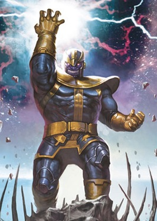

Джош Джеймс Бро́лін (англ. Josh James Brolin; нар.12 лютого 1968, Лос-Анджелес) — американський актор кіно і телебачення.
Найбільш відомий за участю у фільмах «Гангстер» (2007), «Старим тут не місце» (2007), «Дабл ю» (2008), «Гарві Мілк» (2008), «Справжня мужність» (2010), «Люди в чорному 3» (2012), «Мисливці на гангстерів» (2013), «Месники: Війна нескінченності» (2018), «Дедпул» (2018) і «Месники: Завершення» (2019).
Народився в Санта-Моніці, штат Каліфорнія, в сім'ї Джейн Камерон (Ейджі), яка була родом з Корпус-Кристі, штат Техас, і актора Джеймса Броліна. Бролін виріс на ранчо в Каліфорнії під вплив акторської кар'єри свого батька. Його батьки розлучилися, коли йому було 16 років. Співачка Барбара Стрейзанд пізніше стала його мачухою. Він зацікавився акторством після відвідувань акторських імпровізованих курсів в середній школі.
Починав свою кар'єру з телевізійних фільмів і запрошень на ТВ-шоу перш, ніж отримати більш помітну роль Бренда Уолша в фільмі Річарда Доннера та Стівена Спілберга «Бовдури» (1985). Він брав участь у кастингу на роль Тома Хенсона в телесеріалі «Джамп стріт, 21»; він і Джонні Депп були фіналістами, і саме тоді вони стали близькі і залишилися друзями навіть після того, коли роль дісталася Деппу. Бролін був запрошеним в один з епізодів першого сезону серіалу.
Письменник-художник Джим Старлін спочатку задумав про Таноса під час курсів психології в коледжу. Як сказав Старлін: "Я пішов у коледж між військовою службою США і роботою в коміксах. Існував психологічний клас, і я придумав Таноса […] і Дракс Руйнівник, але я не впевнений, як він підходить для цього, просто управління гнівом ймовірно. Тому я підійшов до Marvel і [редактор] Рой [Томас] запитав, чи хочу я зробити проблему Залізній людині. Я відчував, що це може бути моїм єдиним шансом зробити якогось персонажа, не маючи впевненості, що моя кар'єра буде тривати щось більше, ніж через кілька тижнів. І вони застрягли в ньому. Танос був набагато тоншим героєм, і Рой запропонував його наглушити, тому він зовсім трохи посилив його оригінальні ескізи […] і пізніше мені сподобалося настільки сильно підтягнути його, що він продовжував рости. Старлін визнав що Танос був створений під впливом Дарксайда Джек Кірбі: Кірбі зробив «Нових Богів», які, за моєю думкою, були приголомшливимі. У той час він перебрався в DC Comics. Я придумав деякі речі, які були натхненні цим. Ви думаєте, що Танос був натхненний Дарксайдом, але це не випадково. У моїх перших малюнках Таноса, якби він був схожий на будь-кого, це був Metron. У мене були всі ці різноманітні боги і те, що я хотів зробити, Таноса титаном. Рой подивився на хлопця в кріслі, подібному до Метрона, і сказав: «Яловичина його! Якщо ти збираєшся викрасти одного з Нових Богів, принаймні здирає Дарксайда, справді хорошого!»

Перша поява Таноса була в «Залізна людина» #55 (лютий 1973), де була розповідь Джима Старліна, написана Майком Фрідріхом. Сюжетна лінія з цього питання продовжувалась через Captain Marvel #25-33 (два місяці: березень 1973 р. — січень 1974 р.), Marvel Feature #12 (листопад 1973 р.), Daredevil #107 (січень 1974 р.), The Avengers #125 Липень 1974 р.). Він повернувся в розгорнутому сюжетному рядку, який розкривав дивні казки #178—181 (лютий-серпень 1975 р.), Warlock 9-11 (жовтень 1975 р. — січень 1976 р.), Marvel Team Up # 55 (березень 1977 р.) Та 1977 р. «Однорічні плати за месників» і «Marvel Two-in-One»(Танос насправді не з'являється до кінця Warlock 9). Він також був представлений в короткій історії резервування в Logan's Run #6 (червень 1977) і мала невелику роль у графічному романі «Смерть капітана Марвела» (квітень 1982 р.).
Персонаж відродився в Silver Surfer. 3 листопада, #34 (лютий 1990 р.) Та знімали гостей до випуску #59 (листопад 1991 р.), Одночасно з'являючись в The Thanos Quest # 1-2 (вересень-жовтень 1990 р.) Та Infinity Gauntlet # 1-6 (липень -Dec 1991). Після появи у The Amazing Spider-Man #17 (грудень 1991 р.), Танос мав повсякденну роль в Infinity Watch #1-42 (лютий 1992 р. — серпень 1995 р.). Далі йшлося про кросоверські поява в The Infinity War #1-6 (червень — листопад 1992 р.), Infinity Crusade # 1-6 (червень — листопад 1993 р.), Silver Surfer vol. 3, #86-88 (листопад 1993 р. — січень 1994 р.), Хроніки Warlock 6-8, Тор #468—471 (листопад 1993 р. — лютий 1994 р.), Namor Sub-Mariner # 44 (листопад 1993 р.), Defenders #11-14 (січень-квітень 1994 р.), Космічні держави #1-6 (березень- Липень 1994 р.) Та космічних держав без обмежень #1 (травень 1995 р.).